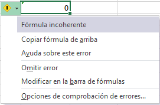

Excel
Tipos de datos
Excel nos permite trabajar con distintos tipos de datos, como
números, fechas y texto, entre otros. Si bien al ingresarlos en las
celdas, estos son detectados de manera automática, el programa no
siempre interpreta de modo correcto lo que deseamos, y por eso es
necesario saber cómo lograr que cada dato se corresponda con su tipo
específico.
Número
El tipo de datos numérico es el que más utilizaremos en nuestras
hojas de cálculo. Al ingresar un número en una celda, el programa
reconocerá el formato numérico y el valor aparecerá alineado a la
derecha.
Los principales aspectos que debemos tener en cuenta al
ingresar números son los siguientes:
- Se admite como número a los caracteres del 0 al 9, el punto decimal
(.) y el separador de miles (,). La función de estos últimos elementos
podrán variar según la configuración regional del sistema operativo
de la computadora en la que estemos trabajando.
- Si utilizamos el punto (.) del teclado numérico, este se tomará como
separador decimal, al igual que el punto (.) del teclado alfanumérico.
- El punto (.) que se encuentra en el teclado alfanumérico será
considerado como separador decimal.
- Podemos agregar un signo monetario, como $ o €, al asignar un
formato de celda monetario.
- El uso de los símbolos + (más), - (menos),
* (multiplicar) y / (dividir) junto con los
números será interpretado como un cálculo
válido si ingresamos el signo = (igual) o + (más)
adelante. Por ejemplo: =100*3.5
- Un número seguido del signo % será tomado
como porcentaje. Al ingresarlo, Excel
dividirá el valor por 100, pero mostrará el
número ingresado seguido de del signo %.
Por ejemplo, si escribimos 40%, eso es lo
que veremos en la celda, aunque el valor numérico será 0.40. En
cambio, si escribimos 40 y le aplicamos el signo % desde la cinta
de opciones, lo que veremos es 400%. Para que se muestre 40%,
debemos escribir 0,40 y luego aplicar % desde la cinta
Observaciones:
- Como consideración general, siempre conviene ingresar los números
sin ningún carácter adicional, solo con el signo menos (-) si correspondiese y el punto
decimal (.) si el número tuviera decimales.
Por ejemplo: 100,000.00 debe
escribirse así: 100000. Luego, con los
formatos de celda podremos verlo con más
o menos decimales, formato monetario, contabilidad, etc
- Si los símbolos +, -, * y / no son precedidos
por el signo = se mostrarán en forma literal sin efectuarse la operación
Texto
El tipo de datos texto abarca las cadenas de caracteres
alfanuméricos, es decir, conjuntos de letras, símbolos y números. Se
utiliza, principalmente, para escribir nombres, rotular información y
describir características, entre otras posibilidades.
Cuando ingresamos texto en una celda, Excel reconocerá de manera
automática este tipo de dato y, de manera predeterminada, lo alineará
a la izquierda, al igual que si ingresamos una combinación de números
y letras más símbolos. Esto puede cambiar si el texto comienza con
el signo igual (=) o con el signo más (+) o menos (-). El programa
interpretará que lo que sigue es una fórmula de cálculo; por lo tanto,
si queremos que sea interpretado como texto, debemos anteponer el
carácter comilla simple (‘)
Fecha y hora
Excel utiliza como elementos separadores de fecha la barra (/) y
el guion (-). Al ingresar dos o tres números separados con alguno de
estos caracteres, el programa los interpreta como fechas. Por ejemplo,
si ingresamos 3/5, aparecerá 03-may del año en curso. En el caso de que
sea 25-2-13, veremos 25/02/2013
El formato de fecha que se interpreta de modo predeterminado
depende de la configuración regional establecida en el sistema
operativo. La configuración regional por defecto, en la mayoría de los
países de habla hispana, es dd/mm/aaaa (día/mes/año); y en los Estados
Unidos es mm/dd/aaaa (mes/día/año).
Además, una fecha como 15/2/2013 tendrá formato de Fecha corta,
mientras que viernes, 15 de febrero de 2013 tendrá formato de Fecha larga.
Ahora, si queremos ingresar un dato en formato de hora, lo hacemos
escribiendo dos números (hora y minutos) separados por dos puntos
(:). Así se interpretará el formato de hora hh:mm (hora:minuto). En
cambio, si ingresamos tres números separados con dos puntos (:) se
toman como hh:mm:ss (hora:minuto:segundo).
Configuración regional
La configuración regional del sistema operativo determina la manera
en que Excel y los demás programas interpretan los números, las
fechas y la distribución del teclado.
Para modificarla, debemos presionar el botón Iniciar, ingresar en
el Panel de control y acceder a la categoría Reloj, idioma y región. Dentro
de la categoría Configuración regional e idiomas podemos modificar
la configuración en general. Es posible elegir los separadores de
decimales y de miles (, o .), el símbolo de la moneda y el formato
de fecha y hora, entre otras opciones. En los países de habla hispana,
las principales opciones predeterminadas suelen ser: fecha corta:
dd/mm/aaaa, símbolo decimal: , (coma), separador de miles: . (punto).
Barra de fórmulas
Cuando trabajamos con hojas de cálculo, introduciremos en ellas
datos de diferentes tipos, como números, fechas y textos; y para
procesarlos, utilizaremos fórmulas y funciones o la combinación de
ambas. Para ingresar los datos en Excel podemos escribir directamente
en las celdas o también es posible utilizar la Barra de fórmulas. En esta
sección analizaremos sus opciones.
Cuadro de nombres
Cuando comenzamos a trabajar con Excel y creamos las primeras
fórmulas, nos referimos a las celdas por la intersección de la columna y
la fila, por ejemplo: A1, aunque también podemos darles un nombre. El
Cuadro de nombres permite acceder rápidamente a una celda o asignarle
un nombre a una celda o rango; esto facilita su uso en las fórmulas o
funciones que emplearemos en los diferentes cálculos.
Para asignarle un nombre a una celda o rango, seleccionamos las
celdas, ingresamos la denominación dentro del Cuadro de nombres y
luego, presionamos la tecla ENTER.
Si asignamos nombres a diferentes celdas o rangos de celdas,
y queremos ver la lista de nombres creados en el libro, debemos
presionar la flecha que se encuentra a la derecha del cuadro. Se
desplegará una lista con todos los nombres asignados en el libro,
incluidos los de las tablas que hayamos creado.
Distribuir el espacio
Sobre la derecha del Cuadro de nombres se muestra un pequeño
icono formado por tres puntos situados de manera vertical. Al acercar
el puntero del mouse, notaremos que este cambia de forma, para
convertirse en una flecha horizontal de doble punta. En ese momento,
podemos hacer clic con el botón principal del mouse y sin soltarlo
arrastrar hacia la derecha o la izquierda. De este modo cambiaremos
el tamaño del área correspondiente al Cuadro de nombres o al área de
introducción, para hacerlas más grandes o más pequeñas.
Iconos de la Barra de fórmulas
A la derecha del Cuadro de nombre se encuentran tres iconos, cuya
función explicaremos a continuación. Al pulsar el icono Insertar función (fx)
llamamos al Asistente de funciones, que nos permite insertar una función en
la celda activa. Este asistente nos guía en la selección de los argumentos
que debe llevar la función y brinda una breve descripción de cada uno.
Es frecuente que los usuarios avanzados no usen este asistente en todos
los casos, porque con el tiempo se aprenden la sintaxis de muchas de las
funciones. Los iconos Introducir (√) y Cancelar (x) se activan en el modo de
edición –cuando estamos ingresando datos o modificando el contenido de
una celda–, y permiten cancelar o aceptar el ingreso o la modificación.
Espacio para datos
El área de escritura/edición es el lugar donde
vamos a ingresar los datos, fórmulas y funciones,
o desde donde, posteriormente, editaremos el
contenido de una celda. En ocasiones, al crear
fórmulas extensas, el espacio disponible para la
edición/visualización no es lo suficientemente
grande como para mostrar todo el contenido que
hemos introducido. En estos casos, es posible
aumentar el espacio haciendo clic sobre el icono
de expansión del área de escritura situado sobre el extremo derecho de
la barra. Al hacer clic sobre este icono, el área de escritura se ampliará
Observación
Microsoft Excel permite escribir en más de una línea dentro de una misma celda. Para lograr ingresar da�tos en una nueva línea dentro de una celda, debemos presionar la combinación de teclas ALT + ENTER
y se creará un salto de línea. Tengamos en cuenta que el programa ajusta de manera automática el alto
de la fila, de acuerdo con la cantidad de líneas de contenido
Operaciones básicas
Excel posee una gran cantidad de herramientas que permiten el
uso profesional y también hogareño. Una de ellas son las fórmulas y
las funciones, que nos ayudan a resolver problemas tanto sencillos
como complejos. Con ellas podremos realizar distintas operaciones:
matemáticas, lógicas y financieras, entre otras. Las fórmulas son
operaciones matemáticas o llamadas a funciones en las que se analizan
variables y se obtiene un resultado.
Ingresar fórmulas
Siempre que vamos a escribir una fórmula, tenemos que utilizar el
operador o signo igual (=). De esta manera, el programa interpretará
que lo siguiente que escribiremos es una fórmula o una función.
Antes de describir la ficha Fórmulas de la cinta de opciones, veremos
algunas de las operaciones básicas que podemos efectuar sin tener
que recurrir a este menú.
Para realizar operaciones, es posible utilizar los datos de dos
maneras con características específicas:
- Literales: escribimos los números directamente dentro de la
fórmula, por ejemplo: =15+14.
- Referencia a valores: utilizamos los nombres de las celdas, por
ejemplo: =A4 + A5, donde A4 y A5 contienen valores numéricos.
Las operaciones en Excel se realizan en un orden, siempre de
izquierda a derecha y respetando la jerarquía de los operadores
aritméticos: división, multiplicación, suma y resta. Debemos tener
esto en cuenta a la hora de efectuar las operaciones básicas,
para no cometer errores. Sin embargo, la mejor manera de evitar
equivocaciones es recurrir a los paréntesis, ya que Excel primero
resolverá las operaciones que estén dentro de ellos.
Una vez que aprendamos a utilizar las fórmulas, ya no
necesitaremos una calculadora para hacer las operaciones básicas
dentro de una hoja de cálculo, sino que podremos sumar, restar,
multiplicar y dividir por medio de la siguiente estructura:
=(operando1)(operador aritmético)(operando2) ENTER
Por ejemplo: =15 * 14 ENTER. Hasta que no presionamos la tecla
ENTER, no se realiza la operación
Observaciones:
- En ocasiones, podemos equivocarnos al ingresar manualmente el nombre de una función. En estos casos,
al intentar aceptar la función para ver el resultado veremos que Excel nos muestra el error #¿Nombre?. De
esta manera, podemos situarnos en la barra de fórmulas o presionar la tecla F2 para editarlo
- Al situarnos en una celda,
la Barra de fórmulas mostrará el cálculo realizado.
Editar fórmulas
Si lo necesitamos, podemos editar los datos que se encuentran
dentro de la fórmula tanto desde la Barra de fórmulas como desde la
celda que contiene la operación.
Para saber si una celda tiene una fórmula o si, simplemente,
queremos ver la fórmula en la celda, presionamos la tecla F2. Excel mostrará
la fórmula en la celda, y en el caso de que hayamos usado
referencias a valores, señalará con un color cada una de las celdas que
están involucradas en la operación. Esta tecla tiene el mismo efecto que
hacer doble clic sobre la celda
Ficha Fórmulas
Ahora sí conoceremos la ficha Fórmulas, que nos permite crear o
modificar diferentes funciones. El primer grupo, Biblioteca de funciones,
contiene toda la variedad de fórmulas que existen en Excel. A
continuación, las veremos en detalle
| Tipo de funciones |
Detalles |
| Autosuma |
Contiene funciones sencillas y de uso frecuente, para
realizar una suma, calcular un promedio, obtener un valor máximo o
mínimo y contar elementos. |
| Recientes |
agrupa las últimas funciones utilizadas. |
| Financieras |
Posee las funciones para realizar cálculos financieros,
como la obtención de intereses y tasas, calcular pagos y
amortizaciones de préstamos. |
| Lógicas |
Estas funciones permiten realizar operaciones de lógica,
como analizar si un valor cumple o no una determinada condición, en consecuencia, efectuar una acción; o averiguar si algo es
verdadero o falso. |
| Texto |
Reúne las funciones para trabajar con textos, como extraer
datos, pasar caracteres a mayúscula o minúscula, o unir el
contenido de dos celdas para armar una frase. |
| Fecha y hora |
Incluye las funciones para realizar operaciones con fechas
y horas, como obtener los días laborales de un año o la fecha actual.
Búsqueda y referencia: con estas funciones podemos buscar datos en
una tabla a partir de condiciones especificadas y utilizarlos para
realizar cálculos o referencias de celda. |
| Matemáticas y trigonométricas |
Algunas de las funciones que podemos
encontrar en este grupo son SUMA (con diferentes variantes),
REDONDEO, COSENO, TANGENTE y PRODUCTO |
| Más funciones |
Contiene cinco subgrupos de funciones avanzadas.
- Estadísticas: para efectuar cálculos estadísticos, como, por ejemplo,
frecuencias, desvíos, media, moda.
- Ingeniería: para realizar diferentes operaciones con números
complejos, binarios, imaginarios.
- Cubo: para trabajar con cubos de datos.
- Información: para obtener información sobre el formato de una
celda o el tipo de datos que contiene.
- Compatibilidad: agrupa las funciones que facilitan la compatibilidad
con versiones anteriores de Excel.
- Web: posee funciones para trabajar con una conexión a Internet
(obtener datos de un servicio web, codificación de cadenas URL, etc.
|
Si presionamos Insertar función, se abre un cuadro del diálogo con la
lista de todas las funciones; allí podemos buscar y seleccionar la que
necesitamos. Por ejemplo, elegimos Suma y presionamos Aceptar. Luego,
se abrirá otro cuadro de diálogo para elegir las celdas que vamos a
sumar, por ejemplo, A4 y A5. Luego de aceptar, obtenemos el resultado.
Tipo de errores
Si cometemos un error al ingresar una fórmula, Excel nos devuelve
un texto que informa su tipo
| Tipo de errores |
Detalles |
| #¡N/A! |
indica que no es posible encontrar una coincidencia exacta
con el valor que se está buscando. |
| #¡REF! |
referencia a una celda inválida o inexistente. |
| #¡NÚMERO! |
expresa la existencia de un valor no numérico en una
fórmula de parámetros numéricos. |
| #¡NOMBRE¡ |
nombre de la función incorrecto. |
| #¡DIV/0! |
cuando intentamos dividir por cero. |
Funciones básicas
Excel posee una gran cantidad de funciones
para diferentes usos. Conocer algunas de ellas
con profundidad nos permitirá resolver tareas
complejas con sencillez.
Una de las características que hacen de Excel
una herramienta tan potente (y fascinante) es la
interminable variedad de formas en que podemos
combinar las funciones en nuestras fórmulas,
creando soluciones eficaces que nos permitirán
resolver problemas complejos con rapidez.
Las funciones son muy versátiles, ya que pueden emplearse en diversos lugares,
aunque suelen acoplarse siempre a las celdas de la hoja de cálculo. Cuando se desea comenzar
a escribir una función en una celda debemos teclear el símbolo = (igual a). A continuación,
se escribe (sin espacios intermedios) el nombre de la función y, por último, si la función lo
necesita, escribiremos (también sin espacios) datos entre paréntesis: =FUNCIÓN(datos).
Qué es una función
Las funciones son fórmulas predefinidas que utilizan valores en una
estructura u orden específico para realizar cálculos, y devuelven un
resultado. Los valores reciben el nombre de argumentos, y el orden o
estructura es la sintaxis de la función.
Los argumentos pueden ser números, texto, referencias a celdas,
valores constantes, fórmulas u otras funciones.
La sintaxis de una función debe contener los siguientes elementos y
en el orden que detallamos:
- El signo igual (=) o el signo más (+).
- El nombre de la función.
- Paréntesis de apertura.
- Los argumentos separados por punto y coma (;) o coma (,). Esto
dependerá de la configuración regional del sistema operativo.
- Paréntesis de cierre.
Cualquiera sea la función que utilicemos, esta siempre deberá
respetar la siguiente estructura:
=Nombre de la función(argumento1;argumento2)
Podemos utilizar las funciones para realizar de manera rápida
distintos tipos de operaciones, tanto simples como complejas. Por
ejemplo, si queremos sumar los valores de las celdas C3 hasta C8,
podemos escribir la siguiente fórmula usando el operador suma (+):
=C3 + C4 + C5 + C6 + C7 + C8
También es posible usar la función SUMA y, como único argumento,
ingresar el rango que queremos sumar:
=SUMA(C3:C8)
Con ambas fórmulas llegamos al mismo resultado, pero resulta
mucho más sencillo y rápido utilizar la última.
Si una función requiere dos o más argumentos, los ingresamos
separándolos con punto y coma (;) o coma (,). Por ejemplo:
=CONSULTAV(A2; C2:D10; 2; FALSO)
Esta función contiene cuatro argumentos. La función MAX solo
necesita un argumento:
=MAX(A2:B4)
El número de argumentos varía para cada función. Incluso, hay
algunas que no requieren ningún argumento, sin que deje de ser
obligatorio para estas el uso de paréntesis. Por ejemplo: =HOY(), que
devuelve la fecha actual.
Ventana Insertar función
Sabemos que las diferentes funciones que presenta Excel se
encuentran agrupadas por categorías en la Biblioteca de funciones. Ahora
veremos cómo podemos utilizar una función.
Primero debemos ubicarnos en la celda donde queremos obtener el
resultado y, luego, pulsar el botón Insertar función, ya sea desde la Barra
de fórmulas o desde la Biblioteca de funciones. A continuación, se abrirá
la ventana Insertar función, el asistente que nos guiará en el proceso de
creación de la sintaxis de la función.
Veamos las opciones que ofrece esta ventana:
- Buscar una función: en este cuadro podemos escribir el nombre
de la función o una breve descripción del cálculo que queremos
hacer, y luego, pulsamos el botón Ir. En el cuadro Seleccionar una
función aparecerán listadas todas las funciones relacionas con la
descripción que hemos ingresado.
- Seleccionar una categoría: si conocemos la categoría a la que
pertenece la función que buscamos, podemos desplegar el menú de
esta sección y seleccionarla. A continuación, en el cuadro Seleccionar
una función aparecerá el listado de las funciones que pertenecen a la
categoría elegida. Si seleccionamos la categoría Todo, en el listado
figurarán todas las funciones que posee Excel. Si elegimos Usadas
recientemente, accederemos a las últimas funciones utilizadas.
- Seleccionar una función: en este sector podemos desplazarnos mediante
la barra derecha para buscar la función. Si seleccionamos cualquiera
de las funciones, debajo aparecerá su descripción y sintaxis.
Una vez que elegimos la función, pulsamos Aceptar y se abrirá la
ventana Argumentos de función, que nos indicará la cantidad y el tipo
de argumentos requeridos. Aquí podremos ingresar un valor, una
referencia de celda o minimizar la ventana y directamente seleccionar
la celda o el rango en la hoja de cálculo.
En la celda donde comenzamos el proceso para insertar la función
aparecerá el resultado, y si nos colocamos en ella, podremos ver la
sintaxis de la función en la Barra de fórmulas.
Distintas formas de insertar funciones
En Excel podemos insertar funciones de diferentes maneras.
Veremos cuáles son las posibilidades y analizaremos las características
y las ventajas de cada una.
• Desde la celda:
esta es la opción más rápida para crear una
función, pero también la que requiere un poco más de experiencia
de nuestra parte. Para escribir directamente la función, debemos
hacer un clic en la celda donde queremos insertarla, ingresar el
signo igual (=) desde el teclado y, a continuación, el nombre de
la función. Al ingresar la primera letra del nombre de la función,
aparecerá un asistente con el listado de las funciones que
comienzan con esa letra. Si hacemos un clic sobre el nombre de
alguna de estas funciones, veremos un pequeño cuadro que nos
indicará qué operación realiza. Para elegir una función, debemos
hacer doble clic sobre ella.
Una vez que la seleccionamos, en la celda, a continuación del
nombre, aparecerá un paréntesis de apertura y una indicación de
los argumentos que necesita la función. Seleccionamos el rango de
celdas para completar los argumentos y pulsamos ENTER.
Barra de fórmulas:
primero debemos seleccionar la celda donde
queremos ingresar la función, luego hacemos un clic en el símbolo
de Insertar función de la Barra de fórmulas. Se abrirá la ventana Insertar
función, que nos guía en el armado de la función.
Biblioteca de funciones:
desde la ficha Fórmulas de la cinta de opciones,
accedemos al grupo Biblioteca de funciones. Aquí podemos utilizar el
botón Insertar función, que abrirá la ventana del mismo nombre, o
bien desplegar los botones de cada categoría, seleccionar la función
que buscamos y luego, completar los argumentos requeridos dentro
de la ventana Argumentos de función.
Botón Autosuma:
se encuentra en el grupo Modificar de la ficha
Inicio. Si lo pulsamos directamente, inserta la función SUMA, pero
si hacemos un clic en la flecha de la derecha para desplegar el
menú, podemos elegir otras funciones, como PROMEDIO, CONTAR,
MÁXIMO y MÍNIMO, o también acceder a la ventana Insertar función, si
seleccionamos la opción Más funciones....
Suma, Máximo, Mínimo y Promedio
Luego de hacer una introducción en el concepto de función, veremos
cómo trabajar con algunas funciones sencillas para entender de
manera más clara su lógica y aplicación. Antes de ponerlas en práctica,
repasaremos algunos conceptos.
La función SUMA adiciona el valor de todos los argumentos
ingresados. Estos argumentos pueden ser:
- Valores numéricos: =SUMA(13;26)
- Referencias de celda: =SUMA(A2;B2;C2)
- Rangos: =SUMA(A1:C3;B2:B4)
- Otras funciones: =SUMA(MAX(A2:A4), MIN(A2:A4)
- Una combinación de todo lo anterior
Desde luego, las referencias deben ser a celdas que contengan valores
numéricos. De manera análoga, la función PROMEDIO calcula el promedio
aritmético de todos los argumentos. La función MAX devuelve el valor
más alto de todos los argumentos y MIN devuelve el menor valor.
Tipos de datos
En una Hoja de cálculo, los distintos TIPOS DE DATOS que podemos introducir son:
-
Valores constantes Un dato que se introduce directamente en una celda. Puede ser un número, una fecha
u hora, o un texto. Si deseas una explicación más detallada sobre los valores constantes visita nuestro básico
sobre los tipos de datos
- Fórmulasuna secuencia formada por: valores constantes, referencias a otras celdas, nombres, funciones,
u operadores. Es una técnica básica para el análisis de datos. Se pueden realizar diversas operaciones con los
datos de las hojas de cálculo como +, -, *, /, Sen, Cos, etc. En una fórmula se pueden mezclar constantes, nombres,
referencias a otras celdas, operadores y funciones. La fórmula se escribe en la barra de fórmulas y debe empezar
siempre por el signo =.
Errores
Cuando introducimos una fórmula en una celda puede ocurrir que se produzca un error. Dependiendo del tipo de error
puede que Excel nos avise o no. Podemos detectar un error sin que nos avise cuando aparece la celda con un símbolo en la esquina superior
izquierda tal como esta 
Al hacer clic sobre el símbolo aparecerá un cuadro como información error que nos permitirá saber más sobre el error:

Dependiendo del tipo de error, al hacer clic sobre el cuadro anterior se mostrará un cuadro u otro, a veces
el error sea simplemente que la fórmula de la celda no tiene el mismo aspecto que todas las demás fórmulas adyacente
(por ejemplo, ésta sea una resta y todas las demás sumas).
Si no sabemos qué hacer, disponemos de la opción Ayuda sobre este error. Si lo que queremos es comprobar la fórmula
para saber si hay que modificarla o no, podríamos utilizar la opción Modificar en la barra de fórmulas. Si la
fórmula es correcta, se utilizará la opción Omitir error para que desaparezca el símbolo de la esquina de la celda.
Puede que al introducir la fórmula nos aparezca como contenido de la celda #texto, siendo texto un valor que puede
cambiar dependiendo del tipo de error. Por ejemplo:
| Mensaje |
Signficado |
| ##### |
se produce cuando el ancho de una columna no es suficiente o cuando se utiliza una fecha o una hora negativa. |
| #¡NUM! |
cuando se ha introducido un tipo de argumento o de operando incorrecto, como puede ser sumar textos. |
| #¡DIV/0! |
cuando se divide un número por cero. |
| #¿NOMBRE? |
cuando Excel no reconoce el texto de la fórmula.
|
| #N/A |
cuando un valor no está disponible para una función o fórmula. |
| #¡REF! |
se produce cuando una referencia de celda no es válida. |
| #¡NUM! |
cuando se escriben valores numéricos no válidos en una fórmula o función. |
| #¡NULO! |
cuando se especifica una intersección de dos áreas que no se intersectan. |